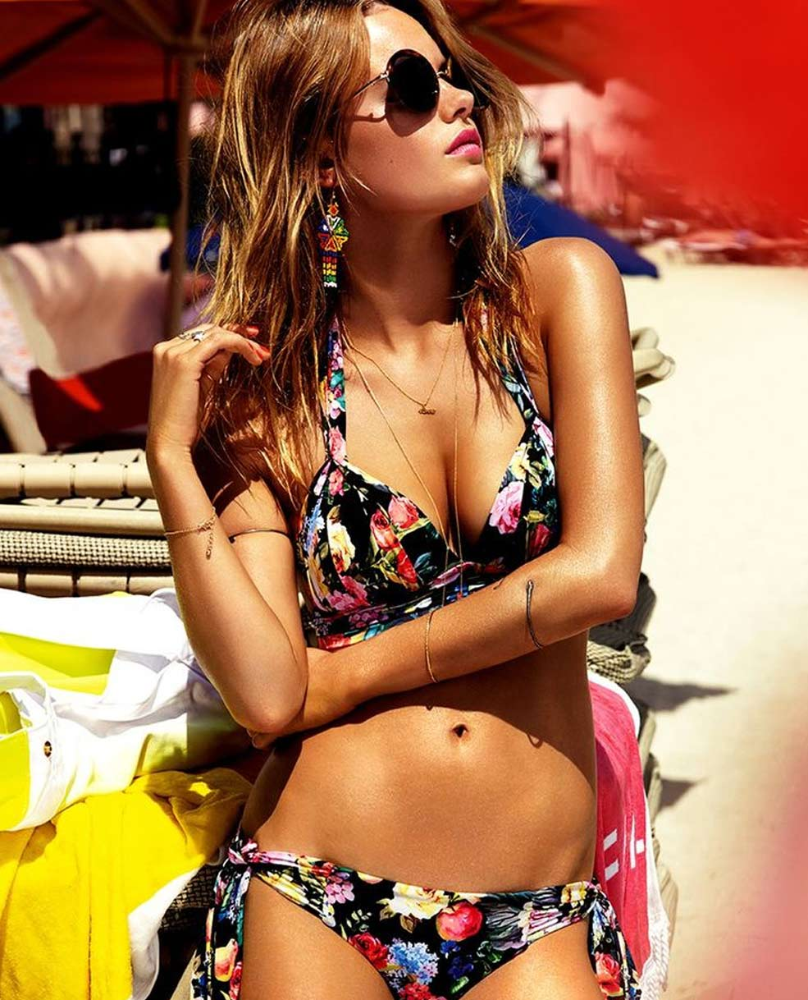
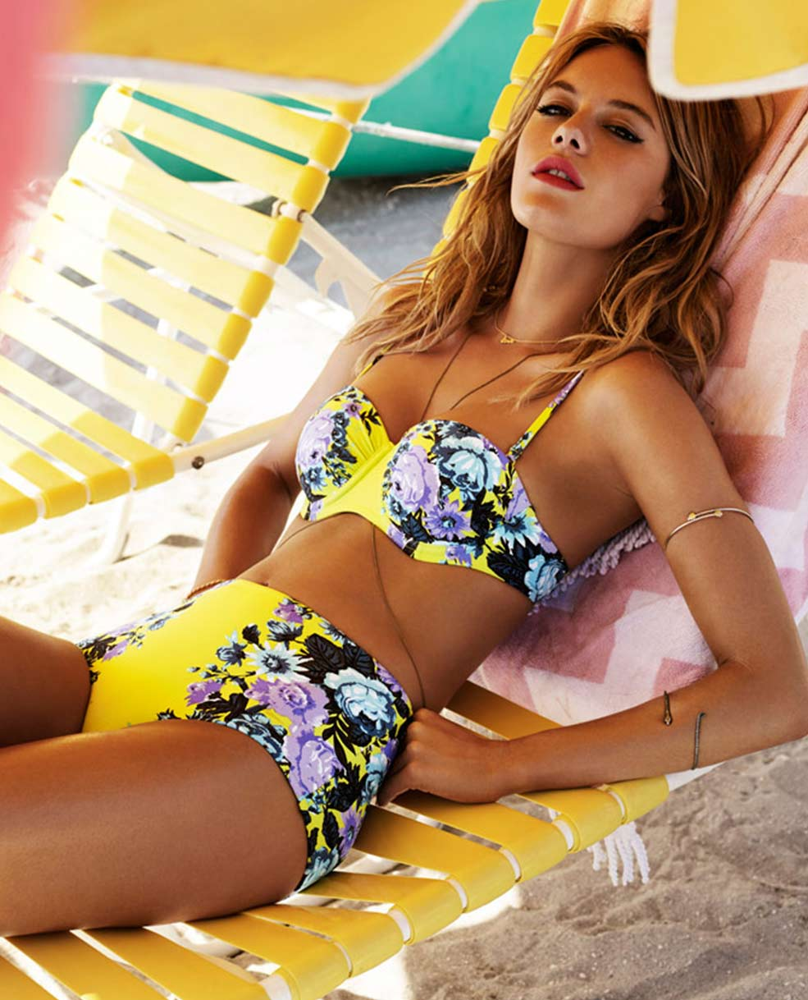

ILLUSTRATION
darwin
July 14, 2017


A 2 part drawing series inspired by plants series inspired by plants inspired by plants drawing series inspired by plants series inspired by plants drawing series inspired by plants series inspired by plants


Drawn in gouache on watercolour paper
2017
A 2 part drawing series inspired by plants series inspired by plants inspired by plants drawing series inspired by plants series inspired by plants drawing series inspired by plants series inspired by plants